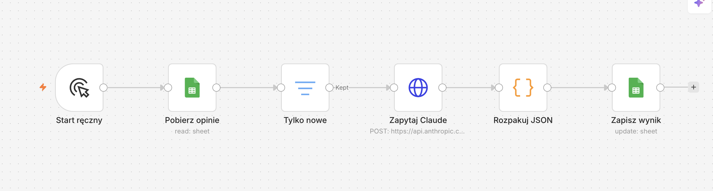

Analiza opinii gości
Wczytywanie danych z arkusza…
Ostatnia aktualizacja: —
Sentyment
| Sentyment | Liczba | Procent |
|---|
Kategorie
| Kategoria | Opinie | Negatywne |
|---|
Opinie negatywne
| Data | Gość | Kategoria | Opinia |
|---|
Jak to działa

- Start ręczny: uruchamia workflow przyciskiem w n8n.
- Pobierz opinie: czyta wszystkie wiersze z arkusza Google Sheets „opinie”.
- Tylko nowe: przepuszcza tylko wiersze z pustym statusem, czyli jeszcze nieprzeanalizowane.
- Zapytaj Claude: wysyła każdą opinię do Claude API, które zwraca sentyment, kategorię i propozycję odpowiedzi.
- Rozpakuj JSON: wyciąga JSON z odpowiedzi modelu i dodaje status „gotowe”.
- Zapisz wynik: aktualizuje wiersz w arkuszu (dopasowanie po kolumnie
id).
Ta strona co 60 sekund pobiera arkusz jako CSV i sama przelicza tabele powyżej.
Pobierz workflow-n8n.json (do zaimportowania w n8n)